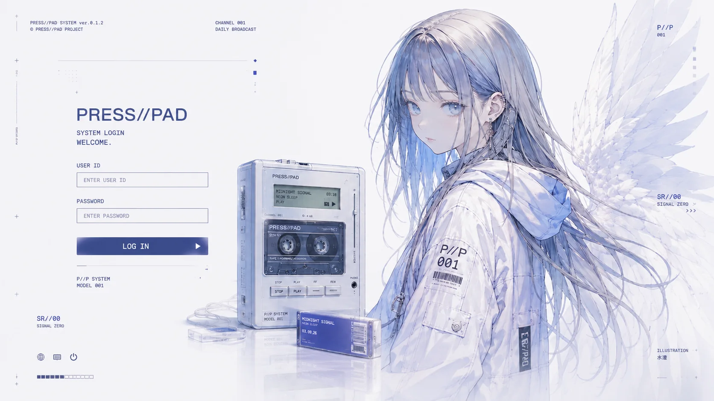
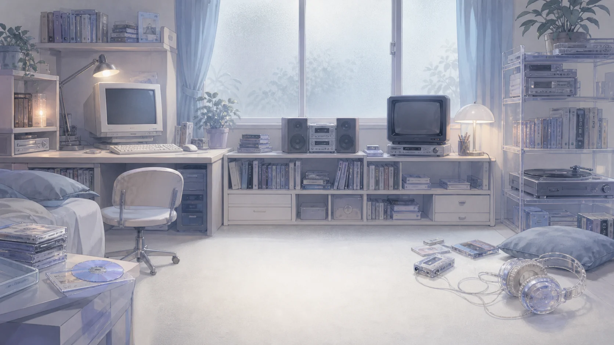

PERSONAL MUSIC TERMINAL / ONLINE
WELCOME.
One signal is waiting for you.
PRESS//PAD SYSTEM
BUILD 012PERSONAL MUSIC TERMINAL / ONLINE
One signal is waiting for you.
PRESS//PAD SYSTEM STARTING

SR//00 · SIGNAL ZERO · ONLINE
Sora Rei is listening. A new broadcast is available until midnight.
01 / MUSIC EXPLORATION
New frequencies selected by the PRESS//PAD editorial desk.
6 fictional artists · 12 canonical tracks · Common and Rare Press editions
Each pair of tracks shares one musical and visual universe.
A new broadcast studies the strange comfort of old login screens.
Architecture, silence, and a machine that almost remembers prayer.
A rainy road, a warm window, and four minutes before sleep.
02 / SHARED DAILY TRANSMISSION
ONE SONG IS BROADCAST EVERY DAY.
1 TAPE AVAILABLE.

03 / PERSONAL MUSIC ARCHIVE
Music you chose to keep.
YOUR LISTENING SPACE
Listening on this device.
Your saved tapes stay on this device when you log out.
PRESS//PAD · V0.1.2